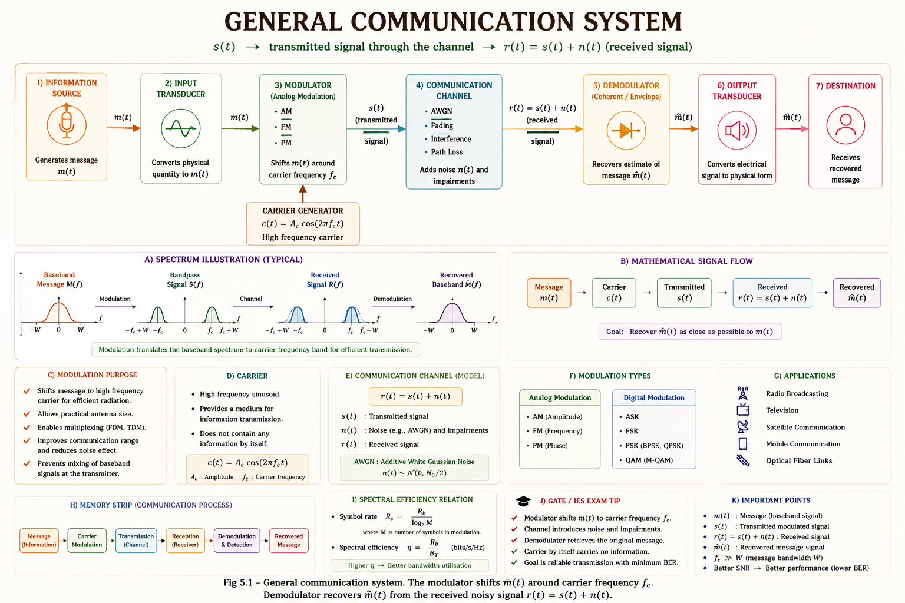
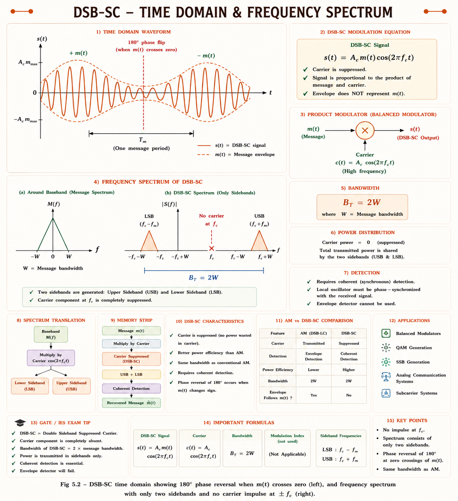
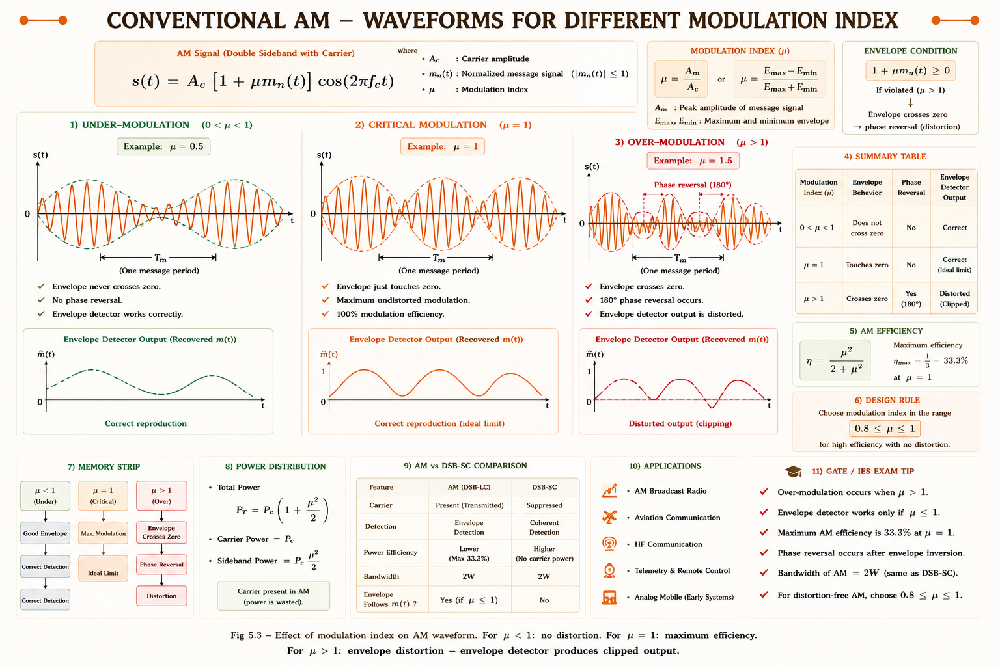
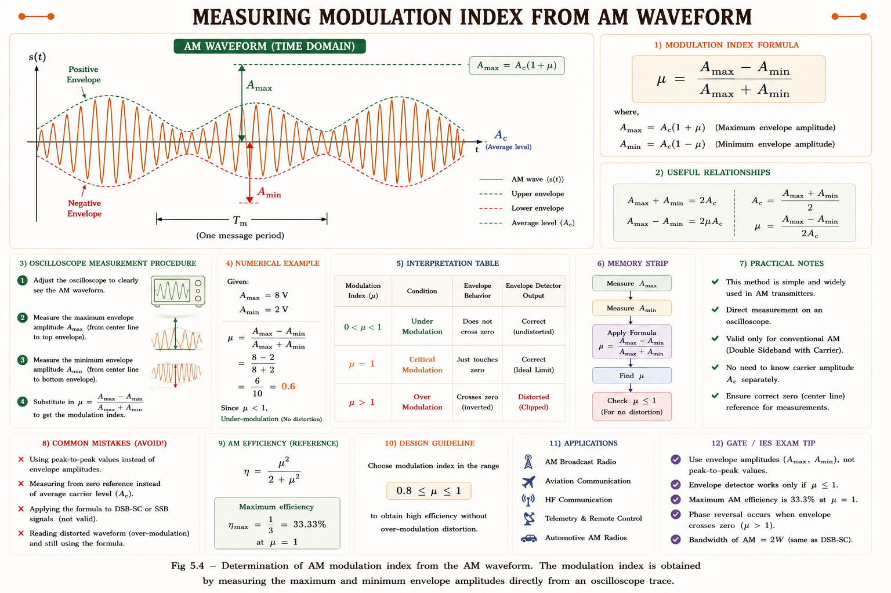
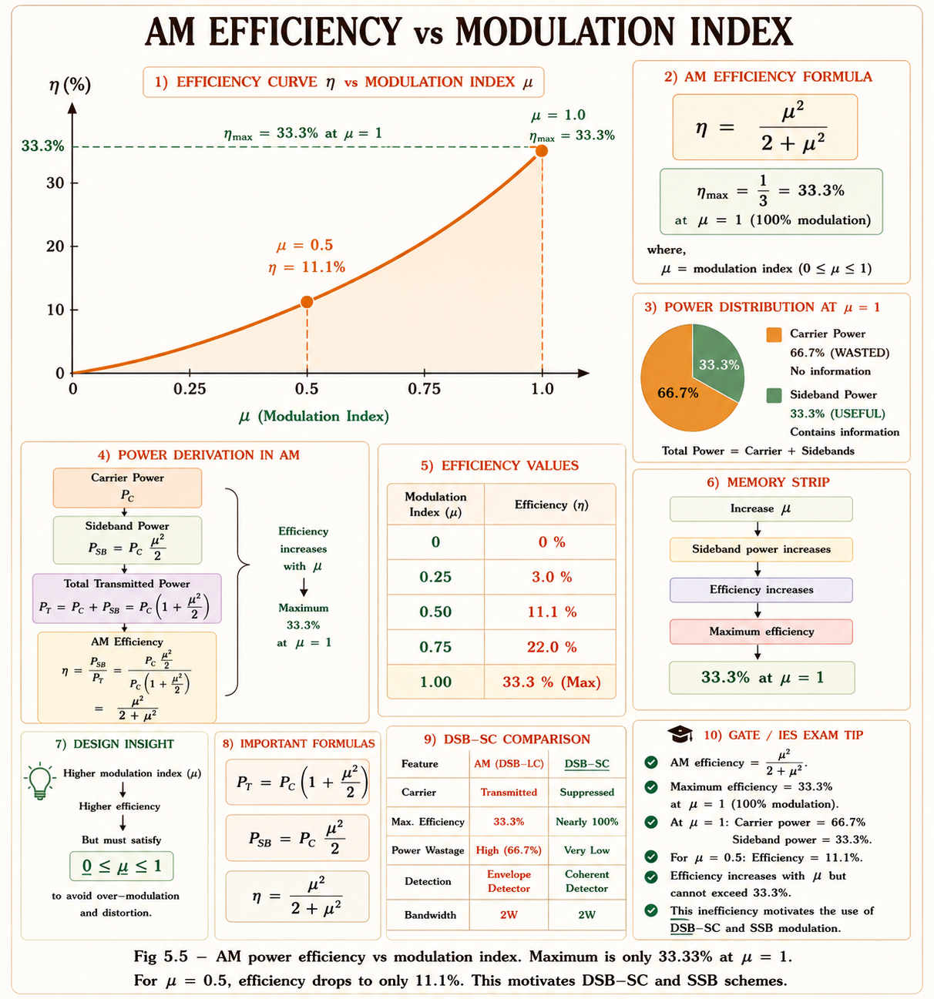
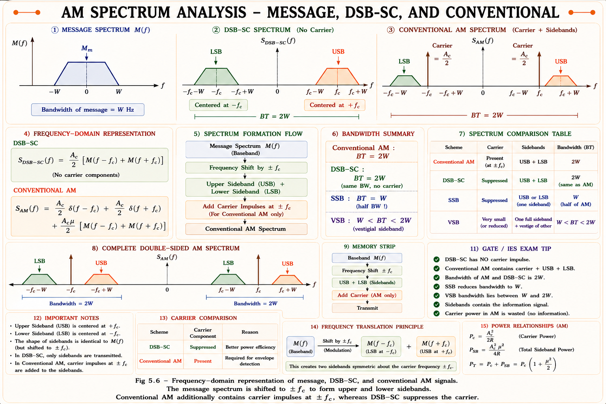
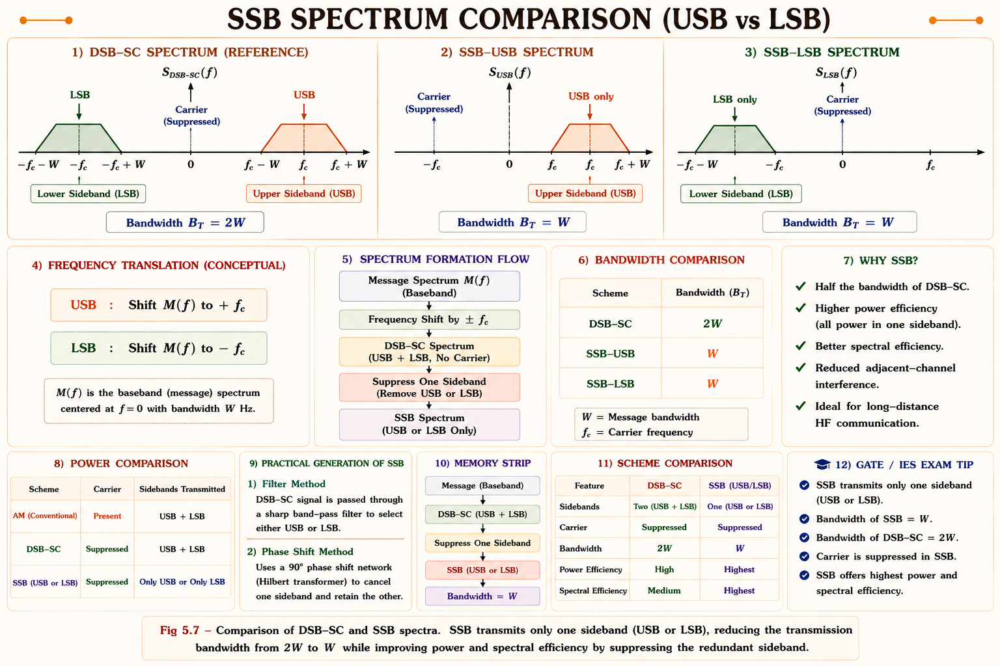
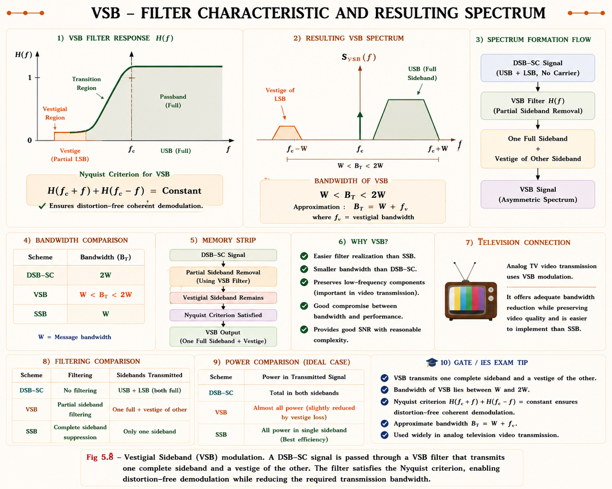

Amplitude Modulation
DSB-SC, Conventional AM, SSB, VSB — modulation index, power efficiency, spectrum analysis, and complete GATE & IES coverage with full derivations, inline SVG diagrams, and solved numericals from standard textbooks.
Why Modulation? — The Big Picture
Consider trying to transmit an audio signal (20 Hz – 20 kHz) directly through free space. The antenna length required would be \(\lambda/4 \approx c/(4f)\). At 1 kHz, this gives an antenna of 75 km — physically impossible. This single engineering reality is the entire motivation for modulation.[1]
Modulation shifts a low-frequency message signal \(m(t)\) to a high-frequency carrier \(c(t) = A_c \cos(2\pi f_c t)\). At \(f_c = 1\) MHz, the antenna is only 75 m. At 100 MHz (FM band), it is 75 cm. This is why we modulate — practical antenna sizes and efficient radiation.
Three Reasons to Modulate
- ▸Antenna Size: \(\ell_{antenna} \propto \lambda = c/f\). Higher \(f_c\) → shorter antenna.
- ▸Multiplexing: Multiple signals at different carrier frequencies share the same medium (FDM).
- ▸Noise Immunity: Some modulation types (FM, PM) can trade bandwidth for SNR improvement.
- ▸AM family: DSB-SC, Conventional AM, SSB, VSB — amplitude of carrier varies
- ▸Angle family: FM (frequency varies), PM (phase varies)
- ▸This chapter covers the AM family in full detail

DSB-SC — Double Sideband Suppressed Carrier
DSB-SC is the simplest form of amplitude modulation and the foundation from which all other AM types are derived. The carrier is completely suppressed — all transmitted power goes into sidebands that carry the actual information.[1,2]
Mathematical Expression
If the message signal is \(m(t)\) and carrier is \(c(t) = A_c \cos(2\pi f_c t)\), then the DSB-SC signal is simply their product:
The amplitude of the carrier \(A_c \cos(2\pi f_c t)\) is varied in direct proportion to \(m(t)\). When \(m(t) > 0\), the signal is positive; when \(m(t) < 0\), the carrier undergoes a 180° phase reversal. This phase reversal is the key distinguishing feature of DSB-SC — it is absent in conventional AM.
Spectrum of DSB-SC
For a tone message \(m(t) = A_m \cos(2\pi f_m t)\), the DSB-SC spectrum is derived by multiplication in time = convolution in frequency:
The spectrum has two sidebands but no impulse at \(\pm f_c\) — the carrier is suppressed. The bandwidth is \(B_T = 2W\) where \(W\) is the message bandwidth.

In DSB-SC, the envelope of s(t) is \(|m(t)|\), not \(m(t)\). A simple envelope detector cannot recover m(t) from DSB-SC — you need coherent (synchronous) demodulation. This is the key disadvantage of DSB-SC.
Generation and Demodulation
- ▸Balanced Modulator: Two AM modulators in balance cancel the carrier component
- ▸Ring Modulator: Four diodes in bridge configuration; carrier switches polarity of m(t)
- ▸Both produce \(s(t) = m(t) \cos(2\pi f_c t)\) with no carrier
- ▸Multiply received signal by \(\cos(2\pi f_c t)\) at receiver
- ▸\(v(t) = s(t)\cos(2\pi f_c t) = m(t)\cos^2(2\pi f_c t)\)
- ▸\(= \frac{m(t)}{2} + \frac{m(t)}{2}\cos(4\pi f_c t)\)
- ▸LPF recovers \(m(t)/2\) — perfect recovery if local carrier is phase-coherent
Conventional AM (Full Carrier AM)
Conventional AM — also called Full Carrier DSB or simply AM — adds a large carrier component to DSB-SC. This solves the demodulation complexity (envelope detection works) at the cost of power efficiency.[1,3]
Here \(k_a\) is the amplitude sensitivity of the modulator (units: V⁻¹). For a tone message \(m(t) = A_m \cos(2\pi f_m t)\), the modulation index is \(\mu = k_a A_m\), giving:

When \(\mu > 1\), the factor \([1 + \mu \cos(2\pi f_m t)]\) becomes negative for some values of \(t\). The envelope of s(t) no longer faithfully follows m(t). An envelope detector will clip the waveform, producing severe nonlinear distortion. This is why broadcast AM transmitters are designed to keep \(\mu \leq 1\) at all times.
Modulation Index (Depth of Modulation)
The modulation index \(\mu\) (also called modulation depth or modulation factor) is one of the most important parameters in AM. It completely characterises the degree of modulation and determines power efficiency.[1,3]
where \(A_{max}\) and \(A_{min}\) are the maximum and minimum amplitudes of the AM envelope, directly measurable on an oscilloscope.

Multi-tone Modulation Index
When multiple sinusoidal message components are present simultaneously (practical signals contain many tones), the total modulation index is found by combining individual indices:
For multi-tone AM, think "RMS of modulation indices." The total \(\mu_t\) is the root-mean-square (actually root-sum-square) of all individual \(\mu_i\) values. Condition for no overmodulation: \(\mu_t \leq 1\).
AM Power & Efficiency
Power analysis of AM reveals why conventional AM is fundamentally inefficient — most of the transmitted power is wasted in the carrier, which carries no information.[1,2,3]
Power Components of Conventional AM
For \(s_{AM}(t) = A_c[1+\mu\cos(2\pi f_m t)]\cos(2\pi f_c t)\), expanding:
Power Efficiency of AM
Efficiency is defined as the fraction of total power that actually carries useful information (sideband power):
The maximum efficiency occurs at \(\mu = 1\):
Even at maximum modulation (\(\mu\) = 1), only 33.3% of transmitted power carries information. The remaining 66.7% is wasted in the unmodulated carrier. This is why DSB-SC (100% efficient in principle) and SSB (50% of DSB-SC bandwidth, 100% efficient) are preferred in power-constrained applications like satellite links and military HF radio.

Power Efficiency Table
| AM Type | Carrier Power | Sideband Power | Efficiency | Bandwidth |
|---|---|---|---|---|
| Conventional AM (\(\mu\)=1) | \(P_c\) | \(P_c\)/2 | 33.3% | 2W |
| Conventional AM (\(\mu\)=0.5) | \(P_c\) | \(P_c\)/8 | 11.1% | 2W |
| DSB-SC | 0 | \(P_m \cdot A_c^2/2\) | 100% | 2W |
| SSB | 0 | \(P_m \cdot A_c^2/4\) | 100% | W |
| VSB | 0 (or small) | ≈ SSB | ~100% | W to 2W |
AM Spectrum Analysis
Spectrum analysis connects the time-domain AM signal to its frequency domain representation. This is critical for understanding bandwidth, filtering requirements, and the relationship between message spectrum and modulated signal spectrum.[1,2]
For a general message \(m(t)\) with Fourier transform \(M(f)\), the AM spectrum is:

Single Sideband (SSB) Modulation
SSB is the most bandwidth-efficient analog modulation technique. Since both sidebands of DSB-SC contain identical information (one is the mirror of the other), transmitting only one sideband halves the bandwidth without any loss of information content.[1,4]
Here \(\hat{m}(t)\) is the Hilbert transform of \(m(t)\) — a 90° phase-shifted version of the message signal for all frequencies.
The Hilbert transform \(\hat{m}(t)\) of \(m(t)\) is equivalent to passing \(m(t)\) through a system with magnitude response \(|H(f)| = 1\) for all \(f\), but phase response \(\angle H(f) = -90°\) for \(f > 0\) and \(+90°\) for \(f < 0\). It is a wideband 90° phase shifter. For \(m(t) = \cos(2\pi f_m t)\), its Hilbert transform is \(\hat{m}(t) = \sin(2\pi f_m t)\).
SSB Generation Methods
- ▸Generate DSB-SC first
- ▸Apply sharp BPF to pass only USB or LSB
- ▸Problem: requires extremely sharp filter (near \(f_c\))
- ▸Only practical when message has no DC: e.g., voice (starts ~300 Hz)
- ▸Also called the Hartley method
- ▸Compute m(t) and \(\hat{m}(t)\) (Hilbert transform)
- ▸Multiply by cos(2πfct) and sin(2πfct) respectively
- ▸Sum/subtract to get USB/LSB
- ▸Works at all frequencies; no sharp filter needed

SSB requires coherent demodulation with a locally generated carrier that is phase-coherent with the original transmitter carrier. A phase error \(\Delta\phi\) at the receiver causes output distortion. For voice communication, a phase error of a few degrees is acceptable, but for data transmission it can be critical.
Vestigial Sideband (VSB) Modulation
VSB is a practical compromise between SSB (best bandwidth) and DSB-SC (ease of generation). It transmits one complete sideband plus a small vestige (trace) of the other sideband. VSB is the modulation used in broadcast television (analogue TV) and in the first stage of ATSC digital TV.[1,4]
TV video signals have significant energy near DC (0 Hz). A sharp sideband filter for SSB is physically impossible at DC — any practical filter has a finite transition band. VSB solves this: the vestige of the other sideband fills in the lost components near DC, avoiding the need for an ideal sharp filter. The total bandwidth is approximately 1.25W instead of W (SSB) or 2W (DSB).

VSB Demodulation Condition
For coherent demodulation of VSB to recover m(t) perfectly, the VSB filter \(H(f)\) must satisfy the Nyquist vestigial symmetry condition:
This ensures that the contributions from the two vestigial tails add up to a constant, recovering m(t) without distortion at the demodulator output.
AM Types — Complete Comparison
| Parameter | Conventional AM | DSB-SC | SSB | VSB |
|---|---|---|---|---|
| Time domain | \(A_c[1+\mu m(t)]\cos(2\pi f_c t)\) | \(m(t)\cos(2\pi f_c t)\) | Uses Hilbert transform \(\hat{m}(t)\) | |
| Bandwidth \(B_T\) | 2W | 2W | W | W to 2W |
| Carrier component | Present (wastes power) | Absent | Absent | Usually absent |
| Power efficiency (\(\mu\)=1) | 33.3% | 100% | 100% | ~100% |
| Demodulation | Simple envelope detector | Coherent only | Coherent only | Coherent (pilot for freq ref) |
| Generation complexity | Simple | Moderate | Complex (sharp filter or phase method) | Moderate |
| Applications | AM broadcast radio | Used inside SSB/VSB generators; QAM | HF telephony, amateur radio | Analogue TV, partial BW savings |
| Phase reversal | No (if \( \mu \leq 1 \)) | Yes (when m(t) changes sign) | N/A | N/A |

GATE & IES Insights — Exam Focus
Based on previous GATE EC papers: AM power calculations and efficiency (asked almost every year), modulation index calculation from waveform, bandwidth of various AM types, and SSB generation/demodulation concepts are the highest-scoring topics in this chapter.
Important Formulas — Quick Reference
Common Mistakes & GATE Traps
- ▸Confusing amplitude sensitivity \(k_a\) with modulation index \(\mu\). They differ: \(\mu = k_a A_m\).
- ▸For multi-tone: using \(\mu_t = \mu_1 + \mu_2\) instead of RMS formula
- ▸Using DSB-SC efficiency as 100% only when message signal power is normalised to 1
- ▸Forgetting that SSB demodulation requires coherent detection
- ▸Given \(P_{\text{total}}\) and \(\mu\), asked to find \(P_c\): use \(P_c = \frac{P_T}{1+\frac{\mu^2}{2}}\)
- ▸For multi-tone AM, total power formula: \(P_T = P_c\left(1 + \frac{\mu_t^2}{2}\right)\)
- ▸Envelope detector distortion occurs when either \(\mu\) > 1 or the carrier frequency is too low compared to message bandwidth
- ▸VSB condition: odd symmetry about \(f_c\), not about 0
Probability Tags
AM Power Calculations 🟢 HIGH
Modulation Index from Waveform 🟢 HIGH
Bandwidth of AM types 🟢 HIGH
SSB Hilbert transform relations 🟡 MEDIUM
VSB filter condition 🟡 MEDIUM
Ring modulator circuit analysis 🔴 LOW
Solved Numerical Examples
Given: \(P_c = 10\) kW, \(\mu = 0.6\)
(i) Total Power:
(ii) Power in each sideband:
Check: \(P_{total\_sidebands} = 0.9 + 0.9 = 1.8\) kW. And \(P_c + 1.8 = 10 + 1.8 = 11.8\) kW ✓
(iii) Efficiency:
Or using formula: \(\eta = \frac{\mu^2}{\mu^2 + 2} = \frac{0.36}{0.36 + 2} = \frac{0.36}{2.36} = 15.25\%\) ✓
Step 1 — Total modulation index:
Since \(\mu_t = 0.707 < 1\), the signal is within the valid modulation range (no overmodulation). ✓
Step 2 — Total power:
For multi-tone AM, you can also compute total sideband power directly: each tone contributes \(\frac{\mu_i^2 P_c}{2}\) to the total, so total sideband power \(= \frac{P_c(\mu_1^2 + \mu_2^2 + \mu_3^2)}{2} = \frac{5 \times 0.5}{2} = 1.25\) kW. Total \(= 5 + 1.25 = 6.25\) kW ✓
Verification: \(\mu = A_m/A_c = 5/10 = 0.5\) ✓. The signal is under-modulated — suitable for envelope detection without distortion.
Step 1 — Multiply s(t) with local carrier:
Step 2 — Use product formula: \(\cos A \cos B = \frac{1}{2}[\cos(A-B) + \cos(A+B)]\)
Step 3 — After LPF (removes 2\(f_c\) term):
When \(\phi = 0\): output = \(20\cos(2\pi f_m t)\) — perfect recovery. When \(\phi = 90°\): output = 0 — complete loss of signal! This is the phase sensitivity problem of coherent demodulation.
GATE & IES Previous Year Questions
An AM signal has the form \(x(t) = [1 + 0.5\cos(2\pi \times 1000t)]\cos(2\pi \times 10^6 t)\). The percentage of total power in the two sidebands is:
- (A) 5.88%
- (B) 11.11%
- (C) 25%
- (D) 33.33%
Solution: Here \(\mu = 0.5\). Sideband power fraction = \(\frac{\mu^2/2}{1+\mu^2/2} = \frac{0.25/2}{1+0.125} = \frac{0.125}{1.125} = 11.11\%\). Answer: (B).
The bandwidth of a DSB-SC signal when the message signal is \(m(t) = 2\cos(2\pi \times 2000t) + 3\cos(2\pi \times 4000t)\) is:
- (A) 2 kHz
- (B) 4 kHz
- (C) 8 kHz
- (D) 12 kHz
Solution: The highest message frequency component is 4 kHz. Bandwidth of DSB-SC = 2W = 2 × 4 kHz = 8 kHz. Answer: (C).
An AM transmitter broadcasts a carrier simultaneously modulated with audio frequencies of 500 Hz at 40% modulation, 1 kHz at 30% modulation, and 2 kHz at 20% modulation. The total modulation index is:
- (A) 0.60
- (B) 0.54
- (C) 0.539
- (D) 0.90
Solution: \(\mu_t = \sqrt{0.4^2+0.3^2+0.2^2} = \sqrt{0.16+0.09+0.04} = \sqrt{0.29} = 0.539\). Answer: (C).
Compared to an AM signal with 100% modulation, an SSB signal carrying the same information requires what fraction of transmission power?
- (A) 1/2
- (B) 1/6
- (C) 1/3
- (D) 1/4
Solution: At \(\mu=1\): AM total power = \(P_c(1+0.5) = 1.5P_c\). Sideband power = \(0.5P_c\). SSB power = half of total sideband power of DSB-SC = \(0.25P_c\). Ratio = \(0.25P_c/1.5P_c = 1/6\). Answer: (B).
Ask any question about Amplitude Modulation — power calculations, spectrum analysis, GATE problems, or derivations.
Chapter Summary
\( s(t) = m(t)A_c \cos(2\pi f_c t) \). No carrier. \( B_T = 2W \). 100% efficient. Phase reversal when \( m(t) < 0 \). Requires coherent detection. Generated by balanced or ring modulator.
\( s(t) = A_c[1+\mu m(t)]\cos(2\pi f_c t) \). Carrier present. \( B_T = 2W \). Max efficiency 33.3% at \( \mu=1 \). Simple envelope detection. \( \mu > 1 \) causes distortion.
Transmits one sideband only. \( B_T = W \) (half of DSB). 100% efficient. Uses Hilbert transform. Coherent demodulation required. Used in HF telephony, amateur radio.
One full sideband + small vestige. \( W < B_T < 2W \). Used in analogue TV. VSB filter needs odd symmetry about \( f_c \). Compromise between SSB and DSB.
\( P_T = P_c\left(1 + \frac{\mu^2}{2}\right) \). \( \eta = \frac{\mu^2}{\mu^2+2} \). Multi-tone: \( \mu_t = \sqrt{\sum \mu_i^2} \). At \( \mu=1 \): \( \eta = 33.3\% \). SSB needs \( \frac{1}{6} \) the power of 100% AM for same coverage.
Envelope detector: for conventional AM only (\( \mu \leq 1 \)). Coherent detector: for DSB-SC, SSB, VSB — local carrier must be phase-coherent. Phase error → signal fading in SSB.
All technical content is derived from the following standard textbooks. All explanations, derivations, diagrams and examples are original to Aarova AI.
- [1]Haykin, Simon. Communication Systems, 4th ed. Wiley, 2001. Chapter 3 — Amplitude Modulation. DSB-SC, conventional AM, SSB, VSB, power efficiency, spectrum analysis, and demodulation methods.
- [2]Lathi, B.P. and Ding, Z. Modern Digital and Analog Communication Systems, 4th ed. Oxford University Press, 2009. Chapter 4 — AM modulation types, Hilbert transform, modulation index, power distributions.
- [3]Couch, Leon W. Digital and Analog Communication Systems, 8th ed. Pearson, 2013. Chapter 8 — AM bandwidth, efficiency, envelope detection, coherent demodulation, VSB television standard.
- [4]Proakis, J.G. and Salehi, M. Communication Systems Engineering, 2nd ed. Prentice Hall, 2002. Chapter 3 — SSB generation methods (filter, Hartley), VSB, demodulation phase sensitivity.
- [5]NPTEL IIT Madras. Analog Communication — Lectures 10–20. National Programme on Technology Enhanced Learning. nptel.ac.in. AM types, power calculations, GATE problems.